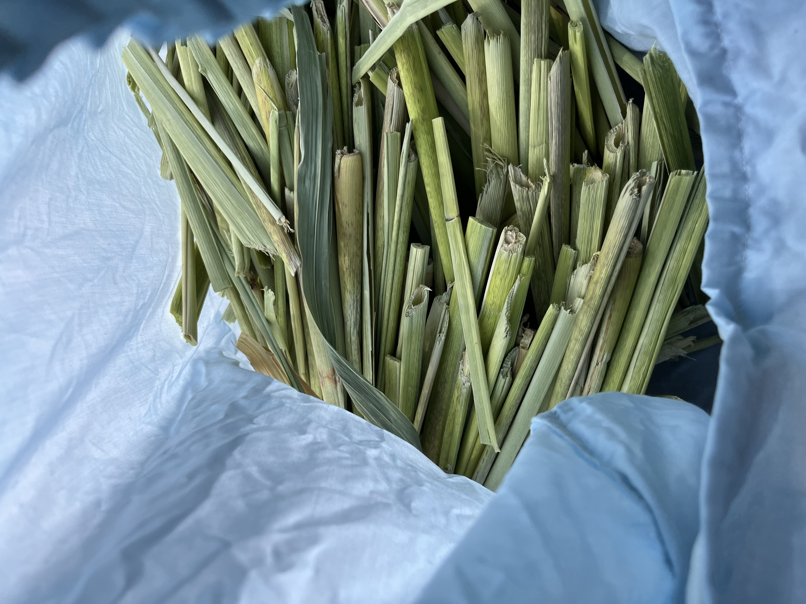

Projects
公開の場で人に使われ、長く取り組み、次の制作へ問いを残した仕事を選んでいます。年順ではなく、現在の活動をよく伝える順に掲載しています。
01 02
03
04
02
03
04 05
05
お花の池・小鳥の森
人の移動を仮想生命の振る舞いへ変換し、池と森へ返した夜間インスタレーション。
Details ↗OHANA-ROBOT
自然言語で操作でき、畝をまたいでバリカン除草を行う、オープンソース志向の農耕民具。
Details ↗秋の庭・鹿おどし
塩ビ管、鹿角、鈴、浮き玉と光を、毛綱毅曠の建築へ組み込んだ時間装置。
Details ↗ヴァナキュラーな稲作ロボット
地形、水、労働と手に入る材料に合わせ、土地ごとに組み替える稲作道具の研究。
Details ↗
真菰の昼寝道具
真菰の硬い根元を選び、縄に綯い、身体を預けるための敷物、枕、草履を作った。
Details ↗